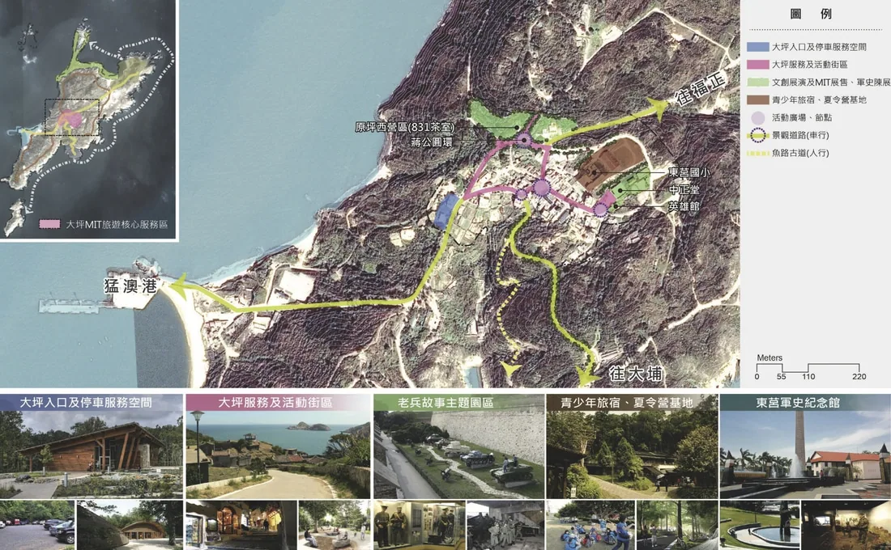
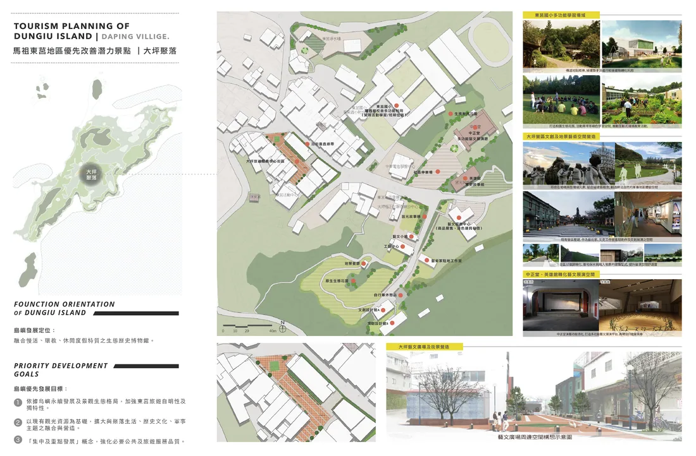
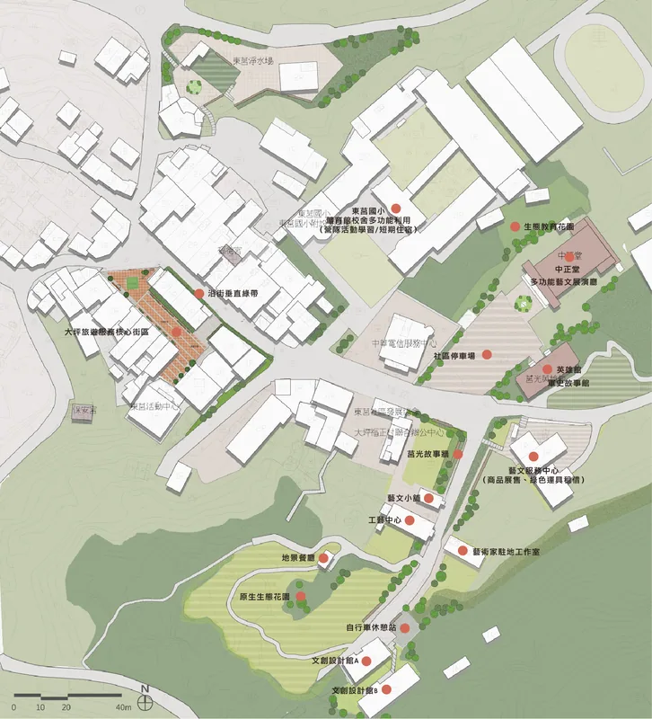

馬祖東莒地區優先改善潛力景點規劃 | 大坪聚落
LANDSCAPE PLANNING OF DUNGIU DAPING VILLAGE, MATSU
本作品擷取自2015年所參與的『馬祖國家風景區東莒地區整體景觀規劃案』中個人所繪製的大坪聚落發展構想圖
全案規劃目的 /
研訂東莒島景觀生態指認框架,至少應包括:自然景觀生態、人文生態、聚落產業生態等,並據以引領觀光發展引入活動承載量和永續發展相關指標。
推動軍事資源活化利用、觀光發展、生態資源復育與人本永續生活結合成「島嶼永續發展空間方案」。
檢討並提出具操作意義之促進民間參與建設相關組合方案與配套策略。
建構地區民眾參與發展建設與經營管理平臺,實踐東莒聚落再生與馬祖島鏈跨界遊程等均衡發展。
本基地的優先發展目標 / 依據島嶼永續發展及景觀生態格局，加強東莒旅遊自明性及獨特性。以現有觀光資源為基礎，擴大與聚落生活、歷史文化、軍事主題之融合與營造。「集中及重點發展」概念，強化必要公共及旅遊服務品質。






Drawn by Olga Yang